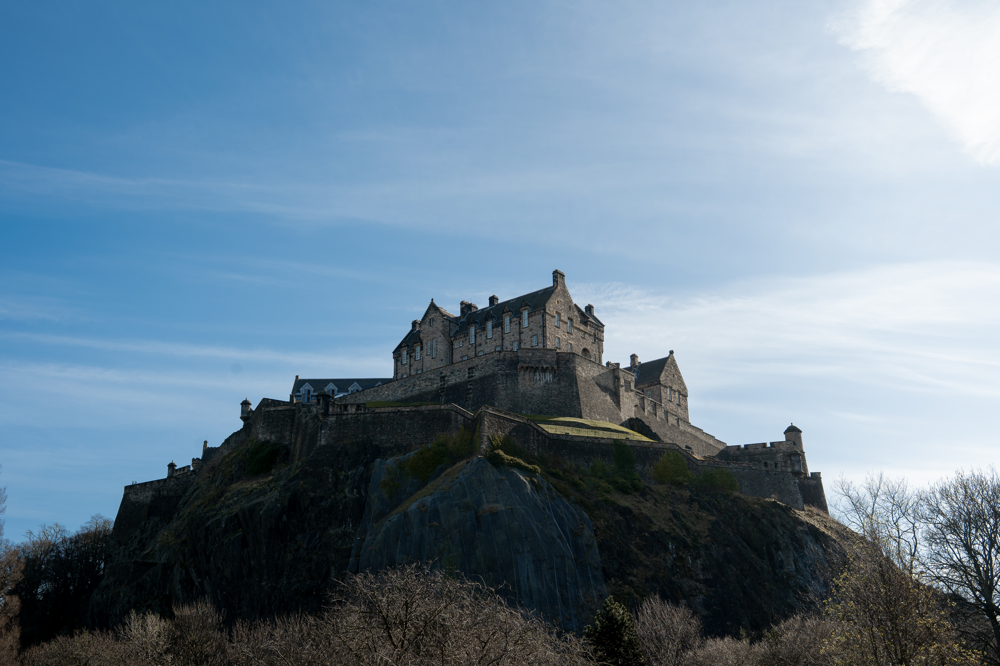
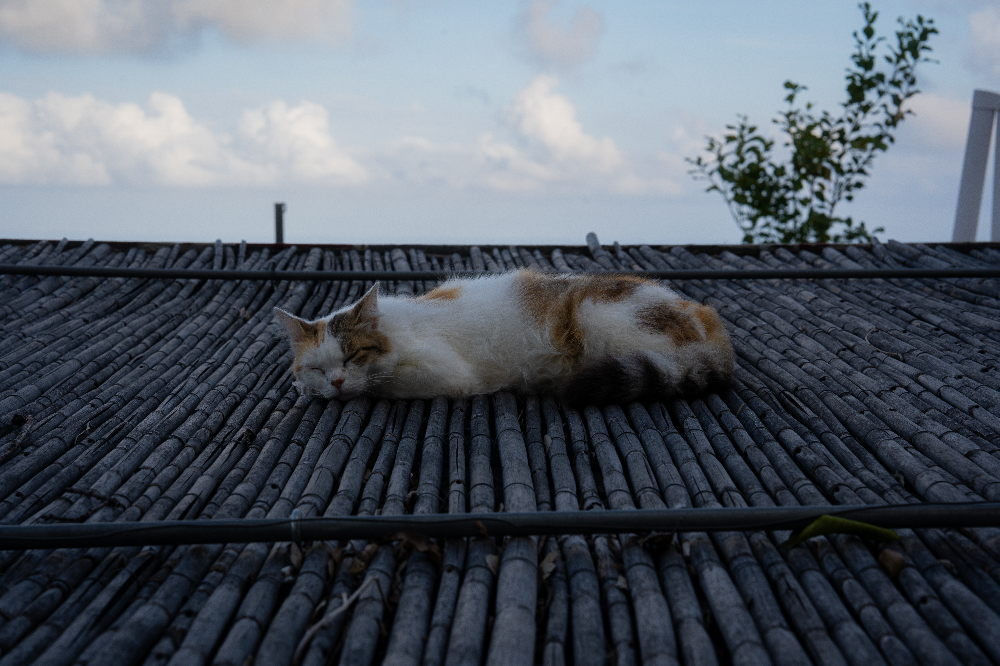

Photo 1: Castle on the Hill

Photo 2: Cat Nap

Photo 3: When in Bern

Photo 4: Foggy Forest

Photo 5: Impending Floods
These photos, along with the one on the homepage are some of my more recent photos. Photos 1 and 2 are more of my recent works while Photos 3, 4, and 5 were all taken during or after my last year of high school. Throughout this period of my life, I wanted to work on experimenting with light, color, and fog to portray a kind of feeling or moment to my viewers. Photo 2 was taken in a mountain town in Italy, where the weather was nice but also cold and windy. I was able to find a cat sleeping peacefully on one of the nearby roofs and I took this shot. I tried to make the colors in the image less dramatic to try and compliment the calmness of the cat, unlike Photos 1 and 3. Photo 1 was taken in Edinburgh of the famous castle from the park below. I remember the sunlight being very harsh which is why I amplified the light in the top corner to try and share that moment with the audience. Photo 3 was taken in Bern and I remember it being very nice and sunny with beautiful looking water. It was a very nice day and I remember my eyes being drawn to the roofs which is what I tried to emphasize in the image. Photo 4 was taken in Switzerland from the bottom of a valley, and I remember the fog preventing me from seeing the looming forests above, so I tried to amplify the fog effect in the image. Photo 5 was also taken on a hike in Switzerland and I remember the clouds being very dark and I wanted to create a darkish feeling with the image.
My personal ranking
- 1. Photo 1: Castle on the Hill
- 2. Photo 3: When in Bern
- 3. Photo 2: Cat Nap
- 4. Photo 4: Foggy Forest
- 5. Photo 5: Impending Floods